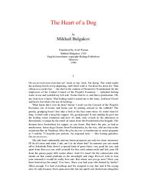

THProfessor Preobrazhenskiyning itni odamga aylantirish bo'yicha g'ayritabiiy tajribasi haqidagi mashhur satirik asar.
Bu asar itning odamga aylantirilishi haqidagi fojiali va hajviy hikoyadir. Professor Preobrazhenskiyning tajribasi jamiyatdagi ijtimoiy o'zgarishlar va inson tabiatining murakkabligini ochib beradi.